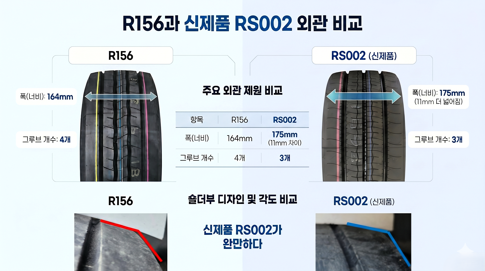
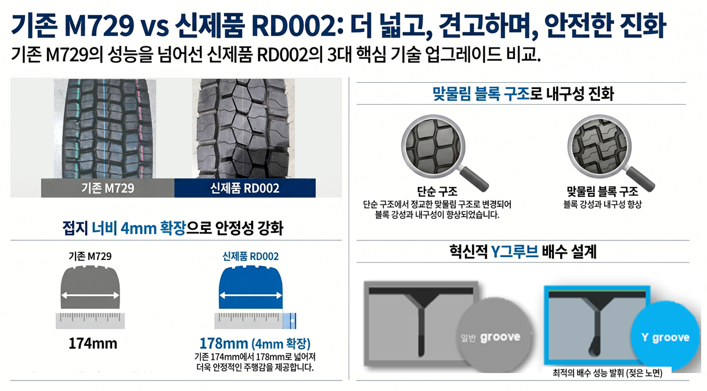

신뢰와 상생,
현장 중심 세일즈
현장의 데이터가 입증하는 압도적인 성능 지표와, 대리점 수익 확대를 보장하는 명확한 프로모션 프로세스를 공유합니다. 당사는 딜러 사장님들과의 실질적인 '동반 성장'을 최우선 가치로 삼고, 하반기 영업 실적 극대화를 위한 체계적인 지원을 지속하겠습니다.
제1회 타또 수익 창출 가이드

타또 당첨 타이어 장착 프로세스
당첨된 고객은 경품 장착을 위해 반드시 대리점을 재방문합니다. 명확한 가이드라인을 통해 대리점의 추가 수익 창출과 고객 신뢰도를 동시에 높이십시오.
- ✔ 배송 및 확인: 구매한 타이어와 동일 모델 증정. 익월 주문과 함께 자동 배송 및 사전 일정 조율 진행.
- ✔ 기본 장착비 확정: 전국 균일가 본당 30,000원 (부가세 별도) 보장 적용.
- ✔ 추가 공임 자율화: 위치교환, 얼라인먼트 등 추가 작업은 각 대리점별 자율 책정으로 부가 수익 창출 가능.
"사장님, 타또 이벤트는 단순한 사은 행사가 아닙니다. 당첨 고객의 매장 재방문을 100% 보장하며, 기본 장착비(본당 3만원) 외에도 얼라인먼트 등 추가 공임을 자율적으로 책정하여 매출을 확대할 수 있는 구조입니다. 매장 방문 고객에게 타또 응모를 적극 권유하는 것이 곧 사장님의 고정 수익으로 직결됩니다."
RS002/RD002 실차 성능 검증 및 안심 보장


- ✔ 실차 마일리지 검증: 전륜(RS002) 10만km, 후륜(RD002) 14만km 주행 후에도 편마모가 발생하지 않는 압도적 내구성 현장 확인.
- ✔ 6개월 안심 보장제: 주행 중 손상 시 '지체 없는 즉시 선보상' 및 전국 BFP 네트워크를 활용한 '교차 보상' 완벽 지원.
타이어 권장 소비자 가격표 안내

상용차 업계 최신 동향 및 세일즈 포인트
플랫폼 시대, 화물차는 왜 설 자리를 잃었나
운임 폭락 및 다단계 알선 구조로 인해 장시간 노동에도 불구하고 화물차 기사들의 수익성이 극도로 악화되고 있는 현실을 진단합니다.
기아 그랜버드 단종 확정…버스업계 “차령 연장해라”
기아 대형버스 그랜버드의 단종이 확정되며, 신차 출고 대기 지연에 따른 기존 운행 차량의 차령 연장 요구가 커지고 있습니다.
상반기 상용차 가동률 최적화 및 유지보수 트렌드
물류 시장 정체 속에서 화물 운송 업체들이 차량의 다운타임(운행 정지)을 최소화하기 위한 선제적 예방 정비로 선회하고 있습니다.
대형 화물차 정비 불량 집중 단속 및 안전 기준 강화
하반기 고속도로를 거점으로 대형 화물차의 과적, 타이어 마모 불량, 제동 장치 결함에 대한 단속과 계도 활동이 강화됩니다.
상생과 협력의 현장 지원 시스템
브리지스톤 타이어 세일즈 코리아는 제품 공급에 그치지 않고, 대리점 사장님들의 실질적 수익 창출을 보장하는 프로모션 기획과 동반 성장을 위한 세일즈 서포트를 지속하겠습니다.